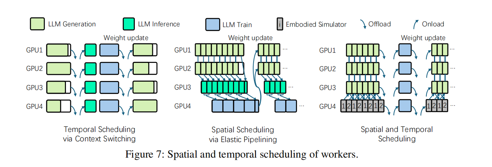

核心思想
同一批请求里，长回答会拖长采样阶段。即使部分 GPU 已完成生成，推理和训练仍可能要等整批结束。胡揚嘉以 RLinf 为例，讨论了把这段等待用起来的两种办法。
同一组 GPU 轮换，还是分组流水？
时间复用让多个阶段轮流使用同一组 GPU，各阶段可以用足设备，但交接时要切换状态。空间流水把不同阶段放到不同 GPU 组，前一阶段产出一块数据，后一阶段即可在依赖满足时接手。代价是每个阶段可用的卡变少。混合模式允许不同子流程采用不同安排。
M2Flow 如何决定何时、在哪些卡上运行？
Runner 描述调用、依赖和同步点，Worker 执行计算，Channel 分块传递中间数据。共享 GPU 时，设备锁配合加载与卸载完成交接。调度器依据实测耗时和 GPU 预算，递归比较设备分配、批次粒度与流水方式。
论文结果与分析
在 Qwen2.5-7B、32 张 GPU 的 PPO 实验中，空间流水让 rollout 耗时增加了 39.3%。推理和训练却能与采样重叠，完整迭代反而更早结束。这也是会上建议同时记录阶段耗时和端到端吞吐的原因。
- ManiSkill：在 8、16、32 张 GPU 的测试中，RLinf 混合模式的端到端吞吐（环境步/秒）比时间复用高 52.2%–69.1%，比空间流水高 60.7%–87.2%。两组百分比分别对应 RLinf 的两种内部基线。
- LIBERO：该环境更依赖 CPU。在论文所测配置中，时间复用优于混合模式。把环境限制在部分设备对应的资源上，会让可用 CPU 核得不到充分利用。
会议建议与后续验证
组内讨论把下一步收敛到少量 GPU 上能完成的 rollout 实验。以下是验证计划，原稿未逐条署名。
- 先确定优化目标。对同一负载记录一次完整训练迭代的耗时和吞吐，再拆分生成、推理、训练、通信和状态切换。用端到端结果判断消除的等待是否抵得过额外开销。
- 标出流水的同步边界。分别记录数据进入 Channel、共享 GPU 释放和计算实际启动的时刻。用这三个时刻定位等待，并检查整批数据齐备、权重同步等算法约束。
- 选一个具身环境做少卡验证。把模型计算、物理仿真和渲染分开计时，观察 CPU、GPU、显存与传输的占用，再决定优先调整环境并发、模型批量还是阶段重叠。
- 给每个结果注明基线和规模。内部模式之间的差异与跨框架的整体收益应分别报告。会上提到的 1024 张 GPU 是调度搜索的输入规模；早期论文列出的 256 张 H100 是集群总容量（32 个节点，每节点 8 张）。论文图 14 给出了从 8 张 GPU 起的具身实验。少卡实验也应写明实际用卡数和可支持的结论。
调度图与来源
展开 RLinf 图 7 与实验出处


调度示意及集群配置见论文早期版本，图 7 与 §5.1。PPO 阶段耗时、具身吞吐和搜索规模分别见论文图 11、14、16。
来源与说明
《系统组小组会会议总结_20261119.docx》正文及内嵌 RLinf 图 7；实验配置与比较基线参见正文所引论文。网页按所列材料与用户补充整理，研究设想和验证安排不表示已完成实验；引用图版权归原作者。
查看来源与使用说明 →